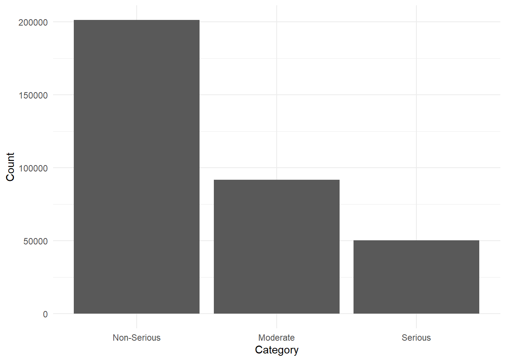

primaryid caseid pt drug_rec_act
<i64> <int> <char> <char>
1: 100289774 10028977 Fixed eruption
2: 100289774 10028977 Stevens-Johnson syndrome
3: 100289774 10028977 Toxic epidermal necrolysis
4: 1005762123 10057621 Dyspnoea
5: 1005762123 10057621 Hypotension
6: 1005762123 10057621 Asthma Adverse Event Trend Analysis with FAERS data
Purpose
To demonstrate how adverse event data can be analysed using R, with appropriate clinical interpretation.
Background & Problem
Adverse event databases contain large volumes of spontaneous reports. However, these data are often misinterpreted due to reporting bias, duplication, and missing context.
Healthcare professionals need:
- Trend awareness
- Signal prioritisation
- Cautious interpretation
This report demonstrates one approach using R.
Data Source
- [FAERS public dataset (FDA)](https://fis.fda.gov/extensions/FPD-QDE-FAERS/FPD-QDE-FAERS.html)
- Reporting is voluntary
- Data includes duplicates and reporting bias
The most recent data as of current date was downloaded and used. The faers_ascii_2025q3.zip was downloaded from the official United States government website.
The folder includes seven .txt files:
- DEMO25Q3.txt (Demographics)
- DRUG25Q3.txt (Drug)
- INDI25Q3.txt (Indication)
- OUTC25Q3.txt (Outcome)
- REAC25Q3.txt (Reaction)
- RPSR25Q3.txt (Report_Sources)
- THER25Q3.txt (Therapy)

This analysis uses the FDA Adverse Event Reporting System (FAERS) public dataset, specifically the REAC table from 2025 Q3.
The REAC table contains adverse reaction terms reported for individual case reports. Each row represents a reported reaction linked to a case identifier (primaryid).
It is important to note that FAERS data is based on spontaneous reports and does not represent confirmed adverse drug reactions.
REAC Table Overview
colnames(reac)[1] "primaryid" "caseid" "pt" "drug_rec_act"Key variables include:
primaryid: Unique identifier for each case reportpt: Preferred Term describing the adverse reaction (MedDRA)caseid: Case-level identifierdrug_rec_act: Drug Recur Action Data if the adverse reaction reappears upon re-administration of the drug.
Multiple adverse reactions may be reported for a single case.
Key Limitations
Several limitations must be considered when interpreting FAERS adverse reaction data:
- A single case may include multiple reported reactions
- Reporting frequency does not equal incidence or risk
- Duplicate or follow-up reports may exist
- Reporting is influenced by media attention and regulatory actions
As a result, counts and trends should be interpreted cautiously and used for signal exploration rather than causal inference.
Important:
This analysis is exploratory and does not imply causality.
Data Preparation
Data exploration of REAC table.
nrow(reac)[1] 1535133length(unique(reac$primaryid))[1] 438512length(unique(reac$caseid))[1] 438512“How many adverse reaction terms are reported per case?”
In the 25Q3 version the number of caseid are the same as the number of primaryid, but for the purpose of clarification, as FAERS cases may include multiple report versions due to follow-up submissions, analyses in this report are conducted at the case level (caseid) to avoid over-counting reactions associated with report updates.
Remove duplicate rows
In this analysis we will remove primaryid as it is not necessary to answer the objective.
reac_new <- select(reac, -"primaryid")reac_new <- reac_new %>%
distinct()Count how many cases have n number of adverse reactions.
reac_per_case <- reac_new %>%
distinct(caseid, pt) %>%
count(caseid, name = "pt_count")
#Same as reac_per_case <- reac |> dplyr::count(primaryid)#Count the count of reactions per case (E.g. 100 cases have 1 reaction etc.)
reac_count <- reac_per_case %>% count(pt_count, name = "Number of cases with n reactions")summary(reac_per_case$pt_count) Min. 1st Qu. Median Mean 3rd Qu. Max.
1.00 1.00 2.00 3.46 4.00 226.00 IQR(reac_per_case$pt_count)[1] 3#binwidth = sqrt(number of observation)
ggplot(reac_per_case, aes(pt_count)) +
geom_histogram(binwidth = 1) +
theme_minimal()
As the histogram is skewed to the left, it is more reliable to look at the median and IQR.
reac_new %>%
summarise(across(c(caseid, pt), ~sum(is.na(.)))) caseid pt
1 0 0No missing data observed in caseid and pt.
length(unique(reac_new$pt))[1] 13126As expected, the number of cases decreases as the number of adverse reactions increase. About a quarter of the cases only had one adverse events, with median of 2 pts per case, suggesting that single-event reporting is common.
Most common adverse reaction
At this stage the drugs are not known therefore the purpose here is to only view the most common adverse effects regardless of the medication.
top_pt <- reac_new %>%
count(pt) %>%
arrange(desc(n)) %>%
slice(1:10)
top_pt pt n
<char> <int>
1: Off label use 30127
2: Drug ineffective 24151
3: Fatigue 20698
4: Death 19165
5: Nausea 18412
6: Diarrhoea 16955
7: Product dose omission issue 15936
8: Headache 14143
9: Dyspnoea 13040
10: Pain 12296Reaction Summary Table
reac_summary <- data.table(
caseid = reac_per_case$caseid,
n_reactions = reac_per_case$pt_count,
five_or_more_reactions = reac_per_case$pt_count >= 5
)
head(reac_summary, 30) caseid n_reactions five_or_more_reactions
<int> <int> <lgcl>
1: 3731857 3 FALSE
2: 4119816 1 FALSE
3: 4197637 2 FALSE
4: 5815921 9 TRUE
5: 5821261 6 TRUE
6: 5962033 5 TRUE
7: 6047261 3 FALSE
8: 6171681 2 FALSE
9: 6171682 5 TRUE
10: 6171684 2 FALSE
11: 6171685 2 FALSE
12: 6171694 2 FALSE
13: 6171695 2 FALSE
14: 6171697 2 FALSE
15: 6171708 5 TRUE
16: 6171711 2 FALSE
17: 6171712 2 FALSE
18: 6178016 1 FALSE
19: 6254162 6 TRUE
20: 6303036 3 FALSE
21: 6303654 2 FALSE
22: 6318887 11 TRUE
23: 6371539 3 FALSE
24: 6371540 3 FALSE
25: 6371543 2 FALSE
26: 6371544 2 FALSE
27: 6371545 2 FALSE
28: 6371553 2 FALSE
29: 6372175 1 FALSE
30: 6451725 2 FALSE
caseid n_reactions five_or_more_reactionsOUTC Table
Now we will look at the OUTC25Q3.txt file to find the distribution of the severity of adverse effects.
outc <- fread(
"FAERS/OUTC25Q3.txt",
sep="$",
quote = "",
fill = TRUE,
encoding = "UTF-8"
)
head(outc) primaryid caseid outc_cod
<i64> <int> <char>
1: 100289774 10028977 HO
2: 100289774 10028977 OT
3: 1005762123 10057621 HO
4: 100789263 10078926 DE
5: 101573482 10157348 HO
6: 101573482 10157348 OTKey variables include:
primaryid: Unique identifier for each case reportcaseid: Case-level identifier.outc_cod: Code of the outcome- DE = Death
- LT = Life-threatening
- HO = Hospitalisation
- DS = Disability
- CA = Congenital anomaly
- RI = Required intervention
- OT = Other
outc %>%
summarise(across(c(primaryid, caseid, outc_cod), ~sum(is.na(.)))) primaryid caseid outc_cod
1 0 0 0outc_cleaned <- outc %>%
distinct() %>%
select(-primaryid)top_outc <- outc_cleaned %>%
count(outc_cod) %>%
arrange(desc(n))
top_outc outc_cod n
<char> <int>
1: OT 191229
2: HO 91722
3: DE 34803
4: LT 15461
5: DS 7226
6: CA 1758
7: RI 1052ggplot(top_outc, aes(reorder(x=outc_cod, -n), y=n)) +
geom_col() +
labs(x = "Outcome Code", y = "Count") +
theme_minimal()
Total of 34,803 deaths, possibly caused by drugs, is an astonishing number considering this data is only one quarter of a year.
As the codes are quite broad, we cannot determine what exactly “Others” is, but according to the FAERS document () it is all important medical event. “Requiring intervention” (To Prevent Permanent Impairment/Damage) scored the lowest which indicates most of the adverse effects are unpreventable, or are unnoticed before it is too late.
The number of “Deaths” are well above the adverse effect of 19,165 in the REAC table - The reason possibly being because there may had been other side effects and those who submitted the data had interpreted Death as the outcome, instead of an adverse effect.
There is no clear cut as to what is categorised as serious and what is not, but for the purpose of this report, DE and LT will be categorised as “Serious”, HO as “Moderate” and others as “Non-serious”.
outc_serious <- outc_cleaned %>%
filter(outc_cod == "DE" | outc_cod == "LT")
outc_moderate <- outc_cleaned %>%
filter(outc_cod == "HO")
outc_non_serious <- filter(outc_cleaned, outc_cod %in% c("OT", "DS", "CA", "RI"))
# Combine into a summary data frame for plotting
outc_category_count <- data.frame(
category = c("Serious", "Moderate", "Non-Serious"),
total_count = c(nrow(outc_serious), nrow(outc_moderate), nrow(outc_non_serious))
)
ggplot(outc_category_count, aes(reorder(x=category, -total_count), y=total_count)) +
geom_col() +
labs(x = "Category", y = "Count") +
theme_minimal()
Outcome Summary Table
#Categorise cases
outc_serious$Severity <- "Severe"
outc_moderate$Severity <- "Moderate"
outc_non_serious$Severity <- "Non-Serious"
outc_summary <- bind_rows(outc_serious, outc_moderate, outc_non_serious)reac_outc <- reac_summary %>%
left_join(outc_summary, by = "caseid")
head(reac_outc, 30) caseid n_reactions five_or_more_reactions outc_cod Severity
<int> <int> <lgcl> <char> <char>
1: 3731857 3 FALSE DE Severe
2: 3731857 3 FALSE HO Moderate
3: 3731857 3 FALSE OT Non-Serious
4: 4119816 1 FALSE HO Moderate
5: 4197637 2 FALSE DE Severe
6: 4197637 2 FALSE OT Non-Serious
7: 5815921 9 TRUE HO Moderate
8: 5815921 9 TRUE DS Non-Serious
9: 5821261 6 TRUE DE Severe
10: 5821261 6 TRUE HO Moderate
11: 5821261 6 TRUE OT Non-Serious
12: 5962033 5 TRUE DE Severe
13: 5962033 5 TRUE HO Moderate
14: 6047261 3 FALSE DE Severe
15: 6047261 3 FALSE LT Severe
16: 6047261 3 FALSE HO Moderate
17: 6171681 2 FALSE DE Severe
18: 6171681 2 FALSE HO Moderate
19: 6171682 5 TRUE DE Severe
20: 6171682 5 TRUE HO Moderate
21: 6171684 2 FALSE DE Severe
22: 6171684 2 FALSE HO Moderate
23: 6171685 2 FALSE DE Severe
24: 6171685 2 FALSE HO Moderate
25: 6171694 2 FALSE DE Severe
26: 6171694 2 FALSE HO Moderate
27: 6171695 2 FALSE DE Severe
28: 6171695 2 FALSE HO Moderate
29: 6171697 2 FALSE DE Severe
30: 6171697 2 FALSE HO Moderate
caseid n_reactions five_or_more_reactions outc_cod Severityreac_outc %>%
summarise(across(c(caseid, outc_cod, Severity, n_reactions, five_or_more_reactions), ~sum(is.na(.)))) caseid outc_cod Severity n_reactions five_or_more_reactions
1 0 184126 184126 0 0Many of the cases has missing outcomes - This shows the realness of data gathering; as the outcome reporting is optional many cases will report reactions caused by drugs only. Because this is an important part of the analysis, the missing values are (By R default) included as “NA”. i.e. No outcome recorded.
ggplot(reac_outc, aes(x = Severity)) +
geom_bar() +
theme_minimal()
reac_outc %>%
count(Severity) %>%
mutate(percentage = n / sum(n) * 100) Severity n percentage
<char> <int> <num>
1: Moderate 91722 17.392112
2: Non-Serious 201265 38.163401
3: Severe 50264 9.530943
4: <NA> 184126 34.913544Only 65.1% of FAERS cases report outcome data. Severity analyses therefore reflect a subset of reports and may underestimate true risk.
ggplot(reac_outc, aes(x = n_reactions, fill = Severity)) +
geom_histogram(binwidth = 1, position = "identity", alpha = 0.6) +
labs(
title = "Number of Adverse Reactions per Case",
x = "Number of reactions reported per case",
y = "Number of cases",
fill = "Max severity"
) +
theme_minimal()
plot_data <- reac_outc %>%
group_by(five_or_more_reactions) %>%
summarise(
n_cases = n(),
n_severe = sum(Severity == "Severe", na.rm = TRUE),
prop_severe = n_severe / n_cases
)
ggplot(plot_data, aes(x = five_or_more_reactions, y = prop_severe)) +
geom_col(fill = "#ddf", width = 0.6) +
scale_y_continuous(labels = percent_format(accuracy = 1)) +
labs(
x = "Five or more cases reported",
y = "Proportion with death or life-threatening case"
) +
theme_minimal(base_size = 13)
Although the difference is subtle, cases reporting five or more adverse reactions show a higher proportion of severe outcomes (death or life-threatening reactions) compared with cases reporting fewer reactions.
Analysis
Examples:
Yearly report counts
Top reported drug classes
Serious vs non-serious trends
Each plot should answer one question.
Interpretation (Clinical Context)
It is very important to keep in mind that these are all real-life data with many missing values and errors. It is not possible to know where there may be errors, but a few possibilities include:
- Error submitting an update as a new case
- Entry error
- Multiple drug administration by one patient leading to identifying the wrong drug as the culprit of adverse reactions
While there are many possible errors to keep in mind, the data has a huge number of cases reported. The bigger the data the clearer the consistency and the more accurate the analysis becomes. An increase in reports however does not necessarily indicate increased risk. Possible contributors include:
- Increased prescribing
- Media attention
- Regulatory changes
The results should be read and analysed with the potential errors and influences in mind, and any healthcare professionals or researchers who intend to use this as reference should always use their clinical judgement.
Potential Use Cases
This type of analysis could support:
- Pharmacovigilance signal review
- Internal safety discussions
- Educational summaries